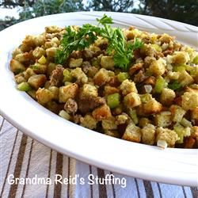

Grandma Reid's Stuffing

Source
Ingredients
- 1 ½ pounds sausage
- 4 tablespoons butter
- 1 onion, finely diced
- 4 stalks celery, diced
- 2 apples - peeled, cored, and diced
- 3 cloves garlic, minced
- 10 cups white bread cubes
- 3 teaspons chopped parsley
- 2 teaspoons poultry seasoning
- 1 teaspoon ground sage
- salt and pepper to taste
Directions
- Place sausage in a large, deep skillet. Cook over medium high heat until crumbled and evenly brown. Drain, and set aside.
- In the same skillet, add the butter, onion, celery, apples and garlic. Cook until all ingredients are soft.
- In a large bowl, combine the onion mixture, sausage and bread cubes. Toss together.
- Add the parsley, poultry seasonings, sage, and salt and pepper. Toss to combine and loosely pack into turkey cavity.